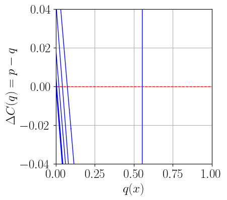
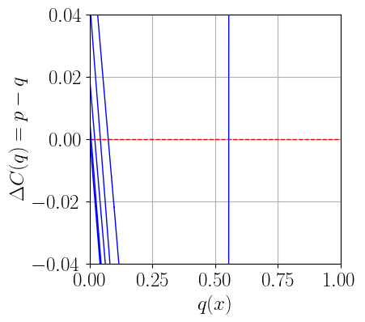

step 1: Get trainig Data
Contents
The purpose of this notebook is to perform what was done earlier but then take the derivative of \(\lambda\) wrt the inputs to get the PDF of \(\lambda\). This should resemble the \(\chi^2\) distribution.
import numpy as np; import pandas as pd
import scipy as sp; import scipy.stats as st
import torch; import torch.nn as nn
#use numba's just-in-time compiler to speed things up
from numba import njit
from sklearn.preprocessing import StandardScaler; from sklearn.model_selection import train_test_split
import matplotlib as mp; import matplotlib.pyplot as plt;
#reset matplotlib stle/parameters
import matplotlib as mpl
mpl.rcParams.update(mpl.rcParamsDefault)
plt.style.use('seaborn-deep')
mp.rcParams['agg.path.chunksize'] = 10000
font_legend = 15; font_axes=15
# %matplotlib inline
from joblib import Memory
import copy; import sys; import os
from IPython.display import Image, display
from importlib import import_module
from model import RegularizedRegressionModel
try:
import optuna
except Exception:
print('optuna is only used for hyperparameter tuning, not critical!')
pass
# import sympy as sy
#sometimes jupyter doesnt initialize MathJax automatically for latex, so do this
try:
LFI_PIVOT_BASE = os.environ['LFI_PIVOT_BASE']
print('BASE directoy properly set = ', LFI_PIVOT_BASE)
utils_dir = os.path.join(LFI_PIVOT_BASE, 'utils')
sys.path.append(utils_dir)
import utils
#usually its not recommended to import everything from a module, but we know
#whats in it so its fine
# from utils import *
except Exception:
print("""BASE directory not properly set. Read repo README.\
If you need a function from utils, use the decorator below, or add utils to sys.path""")
pass
BASE directoy properly set = /home/ali/Desktop/Pulled_Github_Repositories/LFI_HEP
FONTSIZE=18
font = {'family': 'serif', 'weight':'normal', 'size':FONTSIZE}
mp.rc('font', **font)
mp.rc('text',usetex=True)
DATA_DIR = os.path.join(LFI_PIVOT_BASE,'data')
memory = Memory(DATA_DIR)
def debug(func):
"""Print the function signature and return value"""
import functools
@functools.wraps(func)
def wrapper_debug(*args, **kwargs):
args_repr = [repr(a) for a in args]
kwargs_repr = [f"{k}={v!r}" for k, v in kwargs.items()]
signature = ", ".join(args_repr + kwargs_repr)
print(f"Calling {func.__name__}({signature})")
values = func(*args, **kwargs)
print(f"{func.__name__!r} returned {values!r}")
return values
return wrapper_debug
def theta_hat_func(n,m, MLE):
#n,m are integer arrays
if MLE==True:
theta_hat = n-m
else:
# non-MLE
# theta_hat = n-m
# theta_hat = (theta_hat) * (theta_hat > 0)
theta_hat = np.where(n>m, n-m, 0)
return theta_hat
def L_prof_global(n,m, MLE):
#n,m integer arrays
# nu_hat = m, if theta_hat = theta_hat_MLE
# nu_hat = (m+n)/2 if theta_hat = n-m
# nu_hat = 0 if theta_hat != n-m
theta_hat=theta_hat_func(n,m,MLE)
# print('n-m ', n-m)
if MLE==True:
# i.e. if theta_hat = n-m
# assert theta_hat==n-m
nu_hat = m
else:
nu_hat =(m+n)/2
# if theta_hat== n-m:
# nu_hat = (m+n)/2
# else:
# nu_hat = 0
# nu_hat = np.where(theta_hat==n-m,
# (m+n)/2,
# 0)
p1=st.poisson.pmf(n, theta_hat+nu_hat)
p2 = st.poisson.pmf(m, nu_hat)
return p1*p2
def L_theta_nu(n,m,theta,nu):
p1 = st.poisson.pmf(n, theta+nu)
p2 = st.poisson.pmf(m, nu)
return p1*p2
def lambda_test_2d(n,m, theta, nu, MLE):
Ln= L_theta_nu(n,m,theta,nu)
Ld= L_prof_global(n,m, MLE)
eps=1e-20
Ld=Ld+eps
lambda_ = -2*np.log(Ln/Ld)
return np.array(lambda_)
@memory.cache
def load_2d_train_df(MLE, with_lambda_D, small_df=False):
""" returns the dataframe, can be used if the dataframe is saved in csv format
of if it is already in dataframe format (e.g. generated in this notebook).
small_df: return a dataframe a fraction of the size"""
# SUBSAMPLE=int(1e5)
# if isinstance(df_name,str):
if with_lambda_D==True:
# USECOLS=['Z','theta', 'nu', 'lambda_D']
USECOLS=['Z','theta', 'nu', 'lambda_D']
if MLE==True:
DF_NAME= 'TWO_PARAMETERS_WITH_LAMBDA_D_theta_0_20_1000k_Examples_MLE_True.csv'
else:
DF_NAME='TWO_PARAMETERS_WITH_LAMBDA_D_theta_0_20_30000k_Examples_MLE_False.csv'
else:
USECOLS=['theta', 'nu', 'N', 'M']
DF_NAME='TWO_PARAMETERS_WITH_LAMBDA_D_theta_0_20_30000k_Examples_MLE_False.csv'
print('are you sure you want to use NM dataframe?')
data_path=os.path.join(LFI_PIVOT_BASE,
'data', DF_NAME)
train_df = pd.read_csv(data_path,
# nrows=SUBSAMPLE,
usecols=USECOLS
)
if small_df==True:
sdf=train_df.iloc[:train_df.shape[0]//2]
train_df=sdf
print(f'loading dataframe with name {DF_NAME}')
print(train_df.describe())
return train_df
eval_df = load_2d_train_df(MLE=False, with_lambda_D=True)
eval_df.head()
________________________________________________________________________________
[Memory] Calling __main__--home-ali-Desktop-Pulled_Github_Repositories-LFI_HEP-JupyterBook-<ipython-input-28f4bb6f5704>.load_2d_train_df...
load_2d_train_df(MLE=False, with_lambda_D=True)
loading dataframe with name TWO_PARAMETERS_WITH_LAMBDA_D_theta_0_20_30000k_Examples_MLE_False.csv
Z theta nu lambda_D
count 3.000000e+07 3.000000e+07 3.000000e+07 3.000000e+07
mean 9.697393e-01 9.998467e+00 9.999992e+00 2.494399e+01
std 1.713038e-01 5.774325e+00 5.773406e+00 1.753169e+01
min 0.000000e+00 2.072384e-07 1.013783e-06 -6.161996e+00
25% 1.000000e+00 4.997241e+00 4.999615e+00 1.109136e+01
50% 1.000000e+00 9.999364e+00 1.000065e+01 2.232372e+01
75% 1.000000e+00 1.499914e+01 1.500015e+01 3.592101e+01
max 1.000000e+00 2.000000e+01 2.000000e+01 2.693300e+02
________________________________________________load_2d_train_df - 51.3s, 0.9min
| Z | theta | nu | lambda_D | |
|---|---|---|---|---|
| 0 | 1 | 10.976270 | 5.658606 | 5.009855 |
| 1 | 1 | 14.303787 | 19.321684 | 77.533441 |
| 2 | 1 | 12.055268 | 18.586260 | 65.413488 |
| 3 | 1 | 10.897664 | 6.853835 | 9.423238 |
| 4 | 1 | 8.473096 | 16.709449 | 29.487904 |
def split_t_x(df, target, source):
# change from pandas dataframe format to a numpy
# array of the specified types
t = np.array(df[target])
x = np.array(df[source])
return t, x
@memory.cache
def getwholedata_2d(MLE, with_lambda_D):
""" Get train test split arrays"""
data = load_2d_train_df(MLE=MLE, with_lambda_D=with_lambda_D)
train_data, test_data = train_test_split(data, test_size=0.2)
#split the train data (0.8 of whole set) again into 0.8*0.8=0.64 of whole set
train_data = train_data.reset_index(drop=True)
test_data = test_data.reset_index(drop=True)
target='Z'
# source = ['theta','nu','theta_hat','N','M']
USECOLS=list(data.columns)
USECOLS.pop(0)
source = USECOLS
train_t, train_x = split_t_x(train_data, target=target, source=source)
test_t, test_x = split_t_x(test_data, target=target, source=source)
print('train_t shape = ', train_t.shape, '\n')
print('train_x shape = ', train_x.shape, '\n')
# if valid:
#if you want to also make a validation data set
train_data, valid_data = train_test_split(train_data, test_size=0.2)
valid_data = valid_data.reset_index(drop=True)
valid_t, valid_x = split_t_x(valid_data, target=target, source=source)
return train_t, train_x, test_t, test_x, valid_t, valid_x
step 1: Get trainig Data#
train_t, train_x, test_t, test_x, valid_t, valid_x = getwholedata_2d(
MLE=True,
with_lambda_D=True)
________________________________________________________________________________
[Memory] Calling __main__--home-ali-Desktop-Pulled_Github_Repositories-LFI_HEP-JupyterBook-<ipython-input-246b6473de0a>.getwholedata_2d...
getwholedata_2d(MLE=True, with_lambda_D=True)
________________________________________________________________________________
[Memory] Calling __main__--home-ali-Desktop-Pulled_Github_Repositories-LFI_HEP-JupyterBook-<ipython-input-28f4bb6f5704>.load_2d_train_df...
load_2d_train_df(MLE=True, with_lambda_D=True)
loading dataframe with name TWO_PARAMETERS_WITH_LAMBDA_D_theta_0_20_1000k_Examples_MLE_True.csv
Z theta nu lambda_D
count 1000000.000000 1000000.000000 1000000.000000 1000000.000000
mean 0.961022 10.001202 9.999901 26.348822
std 0.193543 5.774584 5.775469 17.674733
min 0.000000 0.000033 0.000002 0.000057
25% 1.000000 4.996771 4.993422 12.261644
50% 1.000000 9.998035 9.990127 23.668409
75% 1.000000 15.007757 15.003738 37.635887
max 1.000000 19.999979 19.999992 227.778150
_________________________________________________load_2d_train_df - 1.8s, 0.0min
train_t shape = (800000,)
train_x shape = (800000, 3)
__________________________________________________getwholedata_2d - 2.0s, 0.0min
N_FEATURES = train_x.shape[1]
class SiLURegressionModel(nn.Module):
#inherit from the super class
def __init__(self, nfeatures, ntargets, nlayers, hidden_size, dropout):
super().__init__()
layers = []
for _ in range(nlayers):
if len(layers) ==0:
#inital layer has to have size of input features as its input layer
#its output layer can have any size but it must match the size of the input layer of the next linear layer
#here we choose its output layer as the hidden size (fully connected)
layers.append(nn.Linear(nfeatures, hidden_size))
#batch normalization
# layers.append(nn.BatchNorm1d(hidden_size))
#Dropout seems to worsen model performance
layers.append(nn.Dropout(dropout))
#ReLU activation
layers.append(nn.SiLU())
else:
#if this is not the first layer (we dont have layers)
layers.append(nn.Linear(hidden_size, hidden_size))
# layers.append(nn.BatchNorm1d(hidden_size))
#Dropout seems to worsen model performance
layers.append(nn.Dropout(dropout))
layers.append(nn.SiLU())
#output layer:
layers.append(nn.Linear(hidden_size, ntargets))
# ONLY IF ITS A CLASSIFICATION, ADD SIGMOID
layers.append(nn.Sigmoid())
#we have defined sequential model using the layers in oulist
self.model = nn.Sequential(*layers)
def forward(self, x):
return self.model(x)
@debug
def load_untrained_model(PARAMS):
"""Load an untrained model (with weights initiatted) according to model paramateters in the
PARAMS dictionary
Args:
PARAMS (dict): dictionary of model/training parameters: i.e. hyperparameters and training parameters.
Returns:
utils.RegularizedRegressionModel object
"""
model = SiLURegressionModel(
nfeatures=PARAMS['NFEATURES'],
ntargets=1,
nlayers=PARAMS["n_layers"],
hidden_size=PARAMS["hidden_size"],
dropout=PARAMS["dropout"],
# activation=PARAMS["activation"]
)
# model.apply(initialize_weights)
print('INITIATED UNTRAINED MODEL:',
# model
)
# print(model)
return model
def save_model(model, PARAMS, pth_string):
"""pth string is the name of the pth file which is a
dictionary of dictionaries"""
models_path = os.path.join(LFI_PIVOT_BASE, 'models')
PATH=os.path.join(models_path, pth_string)
print(f'saving model with th string : {pth_string}\n')
torch.save({'PARAMS': PARAMS,
'model_state_dict': model.state_dict()},
PATH)
print(model)
def get_features_training_batch(x, t, batch_size):
# the numpy function choice(length, number)
# selects at random "batch_size" integers from
# the range [0, length-1] corresponding to the
# row indices.
rows = np.random.choice(len(x), batch_size)
batch_x = x[rows]
batch_t = t[rows]
# batch_x.T[-1] = np.random.uniform(0, 1, batch_size)
return (batch_x, batch_t)
Step 2: define model parameters#
PARAMS_lambdaD_nonMLE_SILU = {
"n_layers": int(6),
"hidden_size": int(6),
"dropout": float(0.13),
"NFEATURES":int(N_FEATURES),
"activation": "SiLU",
'optimizer_name':'NAdam',
# 'optimizer_name':'RMSprop',
'starting_learning_rate':float(0.0006),
'momentum':float(0.9),
'batch_size':int(256*4),
'n_iterations': int(3e4),
'traces_step':int(100),
'L2':float(0.1),
'MLE':False,
'with_lambda_D':True,
'pth_string':'FEB_20_model_lambda_D_nonMLE_SILU.pth'
}
step 3: load untrained model#
untrained_SiLU_model = load_untrained_model(PARAMS_lambdaD_nonMLE_SILU)
Calling load_untrained_model({'n_layers': 6, 'hidden_size': 6, 'dropout': 0.13, 'NFEATURES': 3, 'activation': 'SiLU', 'optimizer_name': 'NAdam', 'starting_learning_rate': 0.0006, 'momentum': 0.9, 'batch_size': 1024, 'n_iterations': 30000, 'traces_step': 100, 'L2': 0.1, 'MLE': False, 'with_lambda_D': True, 'pth_string': 'FEB_20_model_lambda_D_nonMLE_SILU.pth'})
INITIATED UNTRAINED MODEL:
'load_untrained_model' returned SiLURegressionModel(
(model): Sequential(
(0): Linear(in_features=3, out_features=6, bias=True)
(1): Dropout(p=0.13, inplace=False)
(2): SiLU()
(3): Linear(in_features=6, out_features=6, bias=True)
(4): Dropout(p=0.13, inplace=False)
(5): SiLU()
(6): Linear(in_features=6, out_features=6, bias=True)
(7): Dropout(p=0.13, inplace=False)
(8): SiLU()
(9): Linear(in_features=6, out_features=6, bias=True)
(10): Dropout(p=0.13, inplace=False)
(11): SiLU()
(12): Linear(in_features=6, out_features=6, bias=True)
(13): Dropout(p=0.13, inplace=False)
(14): SiLU()
(15): Linear(in_features=6, out_features=6, bias=True)
(16): Dropout(p=0.13, inplace=False)
(17): SiLU()
(18): Linear(in_features=6, out_features=1, bias=True)
(19): Sigmoid()
)
)
Step 4: train untrained model#
def average_quadratic_loss(f, t, x):
# f and t must be of the same shape
return torch.mean((f - t)**2)
def average_loss(f, t):
# f and t must be of the same shape
return torch.mean((f - t)**2)
def validate(model, avloss, inputs, targets):
# make sure we set evaluation mode so that any training specific
# operations are disabled.
model.eval() # evaluation mode
with torch.no_grad(): # no need to compute gradients wrt. x and t
x = torch.from_numpy(inputs).float()
t = torch.from_numpy(targets).float()
# remember to reshape!
o = model(x).reshape(t.shape)
return avloss(o, t, x)
def train(model, optimizer, avloss,
batch_size,
n_iterations, traces,
step, window, MLE, with_lambda_D):
# to keep track of average losses
xx, yy_t, yy_v, yy_v_avg = traces
if MLE==True:
train_t, train_x, test_t, test_x, _, _ = getwholedata_2d(MLE=True, with_lambda_D=with_lambda_D)
else:
train_t, train_x, test_t, test_x, _, _ = getwholedata_2d(MLE=False, with_lambda_D=with_lambda_D)
n = len(test_x)
print('Iteration vs average loss')
print("%10s\t%10s\t%10s" % \
('iteration', 'train-set', 'valid-set'))
# training_set_features, training_set_targets, evaluation_set_features, evaluation_set_targets = get_data_sets(simulate_data=False, batchsize=batch_size)
for ii in range(n_iterations):
# set mode to training so that training specific
# operations such as dropout are enabled.
model.train()
# get a random sample (a batch) of data (as numpy arrays)
#Harrison-like Loader
batch_x, batch_t = get_features_training_batch(train_x, train_t, batch_size)
#Or Ali's Loader
# batch_x, batch_t = next(training_set_features()), next(training_set_targets())
# batch_x_eval, batch_t_eval = next(evaluation_set_features()), next(evaluation_set_targets())
with torch.no_grad(): # no need to compute gradients
# wrt. x and t
x = torch.from_numpy(batch_x).float()
t = torch.from_numpy(batch_t).float()
outputs = model(x).reshape(t.shape)
# compute a noisy approximation to the average loss
empirical_risk = avloss(outputs, t, x)
# use automatic differentiation to compute a
# noisy approximation of the local gradient
optimizer.zero_grad() # clear previous gradients
empirical_risk.backward() # compute gradients
# finally, advance one step in the direction of steepest
# descent, using the noisy local gradient.
optimizer.step() # move one step
if ii % step == 0:
#using Harrison-like loader
acc_t = validate(model, avloss, train_x[:n], train_t[:n])
acc_v = validate(model, avloss, test_x[:n], test_t[:n])
#using Ali's loader
# acc_t = validate(model, avloss, batch_x, batch_t)
# acc_v = validate(model, avloss, batch_x_eval, batch_t_eval)
yy_t.append(acc_t)
yy_v.append(acc_v)
# compute running average for validation data
len_yy_v = len(yy_v)
if len_yy_v < window:
yy_v_avg.append( yy_v[-1] )
elif len_yy_v == window:
yy_v_avg.append( sum(yy_v) / window )
else:
acc_v_avg = yy_v_avg[-1] * window
acc_v_avg += yy_v[-1] - yy_v[-window-1]
yy_v_avg.append(acc_v_avg / window)
if len(xx) < 1:
xx.append(0)
print("%10d\t%10.6f\t%10.6f" % \
(xx[-1], yy_t[-1], yy_v[-1]))
else:
xx.append(xx[-1] + step)
print("\r%10d\t%10.6f\t%10.6f\t%10.6f" % \
(xx[-1], yy_t[-1], yy_v[-1], yy_v_avg[-1]),
end='')
print()
return (xx, yy_t, yy_v, yy_v_avg)
BATCHSIZE=PARAMS_lambdaD_nonMLE_SILU["batch_size"]
traces_SiLU = ([], [], [], [])
traces_step = 2000
optimizer_name=PARAMS_lambdaD_nonMLE_SILU["optimizer_name"]
optimizer_SiLU = getattr(torch.optim, str(optimizer_name))(untrained_SiLU_model.parameters(), lr=PARAMS_lambdaD_nonMLE_SILU["starting_learning_rate"])
traces_SiLU = train(model=untrained_SiLU_model,
optimizer=optimizer_SiLU,
avloss=average_quadratic_loss,
batch_size=BATCHSIZE,
n_iterations=PARAMS_lambdaD_nonMLE_SILU["n_iterations"],
traces=traces_SiLU,
step=traces_step,
window=200,
MLE=False,
with_lambda_D=True)
________________________________________________________________________________
[Memory] Calling __main__--home-ali-Desktop-Pulled_Github_Repositories-LFI_HEP-JupyterBook-<ipython-input-246b6473de0a>.getwholedata_2d...
getwholedata_2d(MLE=False, with_lambda_D=True)
train_t shape = (24000000,)
train_x shape = (24000000, 3)
_________________________________________________getwholedata_2d - 21.0s, 0.4min
Iteration vs average loss
iteration train-set valid-set
0 0.350313 0.350326
28000 0.016431 0.016399 0.016399
Step 4: Save trained model#
def save_model(model, PARAMS, pth_string):
"""pth string is the name of the pth file which is a dictionary of dictionaries"""
models_path = os.path.join(LFI_PIVOT_BASE, 'models')
PATH=os.path.join(models_path, pth_string)
print(f'saving model with th string : {pth_string}\n')
torch.save({'PARAMS': PARAMS,
'model_state_dict': model.state_dict()},
PATH)
print(model)
save_model(model=untrained_SiLU_model,
PARAMS=PARAMS_lambdaD_nonMLE_SILU,
pth_string=PARAMS_lambdaD_nonMLE_SILU["pth_string"])
saving model with th string : FEB_20_model_lambda_D_nonMLE_SILU.pth
SiLURegressionModel(
(model): Sequential(
(0): Linear(in_features=3, out_features=6, bias=True)
(1): Dropout(p=0.13, inplace=False)
(2): SiLU()
(3): Linear(in_features=6, out_features=6, bias=True)
(4): Dropout(p=0.13, inplace=False)
(5): SiLU()
(6): Linear(in_features=6, out_features=6, bias=True)
(7): Dropout(p=0.13, inplace=False)
(8): SiLU()
(9): Linear(in_features=6, out_features=6, bias=True)
(10): Dropout(p=0.13, inplace=False)
(11): SiLU()
(12): Linear(in_features=6, out_features=6, bias=True)
(13): Dropout(p=0.13, inplace=False)
(14): SiLU()
(15): Linear(in_features=6, out_features=6, bias=True)
(16): Dropout(p=0.13, inplace=False)
(17): SiLU()
(18): Linear(in_features=6, out_features=1, bias=True)
(19): Sigmoid()
)
)
Step 5: Load Trained model#
def load_model(model, PARAMS, pth_string):
models_path = os.path.join(LFI_PIVOT_BASE, 'models')
PATH=os.path.join(models_path, pth_string)
model = SiLURegressionModel(
nfeatures=PARAMS['NFEATURES'],
ntargets=1,
nlayers=PARAMS["n_layers"],
hidden_size=PARAMS["hidden_size"],
dropout=PARAMS["dropout"]
)
checkpoint = torch.load(PATH)
print('INITIATED MODEL:', model)
model.load_state_dict(checkpoint['model_state_dict'])
print(f'loading model with th string : {pth_string}\n')
print(model)
return model
# untrained_SiLU_model = load_untrained_model(PARAMS_lambdaD_nonMLE_SILU)
trained_SiLU_model = load_model(model = untrained_SiLU_model,
PARAMS=PARAMS_lambdaD_nonMLE_SILU,
pth_string=PARAMS_lambdaD_nonMLE_SILU["pth_string"])
INITIATED MODEL: SiLURegressionModel(
(model): Sequential(
(0): Linear(in_features=3, out_features=6, bias=True)
(1): Dropout(p=0.13, inplace=False)
(2): SiLU()
(3): Linear(in_features=6, out_features=6, bias=True)
(4): Dropout(p=0.13, inplace=False)
(5): SiLU()
(6): Linear(in_features=6, out_features=6, bias=True)
(7): Dropout(p=0.13, inplace=False)
(8): SiLU()
(9): Linear(in_features=6, out_features=6, bias=True)
(10): Dropout(p=0.13, inplace=False)
(11): SiLU()
(12): Linear(in_features=6, out_features=6, bias=True)
(13): Dropout(p=0.13, inplace=False)
(14): SiLU()
(15): Linear(in_features=6, out_features=6, bias=True)
(16): Dropout(p=0.13, inplace=False)
(17): SiLU()
(18): Linear(in_features=6, out_features=1, bias=True)
(19): Sigmoid()
)
)
loading model with th string : FEB_20_model_lambda_D_nonMLE_SILU.pth
SiLURegressionModel(
(model): Sequential(
(0): Linear(in_features=3, out_features=6, bias=True)
(1): Dropout(p=0.13, inplace=False)
(2): SiLU()
(3): Linear(in_features=6, out_features=6, bias=True)
(4): Dropout(p=0.13, inplace=False)
(5): SiLU()
(6): Linear(in_features=6, out_features=6, bias=True)
(7): Dropout(p=0.13, inplace=False)
(8): SiLU()
(9): Linear(in_features=6, out_features=6, bias=True)
(10): Dropout(p=0.13, inplace=False)
(11): SiLU()
(12): Linear(in_features=6, out_features=6, bias=True)
(13): Dropout(p=0.13, inplace=False)
(14): SiLU()
(15): Linear(in_features=6, out_features=6, bias=True)
(16): Dropout(p=0.13, inplace=False)
(17): SiLU()
(18): Linear(in_features=6, out_features=1, bias=True)
(19): Sigmoid()
)
)
class TrainedModel:
def __init__(self, model):
self.model = model
def __cdf(self, x):
# convert to a tensor and compute
if (type(x) == type(1.0)) or (type(x) == type(1)):
X = torch.Tensor(np.array([x]))
else:
X = torch.Tensor(np.array([x])).transpose(1, 0)
X.requires_grad_(True)
self.model.eval()
return self.model(X).view(-1), X
def cdf(self, x):
F, _ = self.__cdf(x)
Y = F.view(-1).detach().numpy()
if len(Y) == 1:
Y = Y[0]
return Y
def pdf(self, x):
F, X = self.__cdf(x)
dFdX = torch.autograd.grad(outputs=F, inputs=X,
grad_outputs=torch.ones_like(F),
#allow_unused=True,
#retain_graph=True,
create_graph=True)[0]
# Y = dFdX.view(-1).detach().numpy()
Y = dFdX.detach().numpy()
if len(Y) == 1:
Y = Y[0]
return Y
def make_binned_X(X_min, X_max, Nbins):
X_step = (X_max-X_min) / Nbins
bins = np.arange(X_min, X_max+X_step, X_step)
bin_centers = (bins[1:] + bins[:-1])/2
return np.array(bin_centers)
def make_eval_data_2d_with_NM(Bprime, N, M, nbins_theta, nbins_nu):
"""Make evaluation data composed of: binned theta and nu, and discrete N and M,
and optionally theta_hat. The theta hat argument accpts an MLE boolean, therefore
if trained on MLE data, the theta_hat that we use for evaluation is just
n-m, including negative values.
The return value of this function is used as the "eval_data" tensor below
with lambda_D or with NM"""
#if MLE true, load the model that was trained on MLE data and vice versa
# N, M = D
# nbins=NBINS
# thetamin,thetamax=0,20
train_df = load_2d_train_df(MLE=True, with_lambda_D=True)
THETA_bin_centers = make_binned_X(X_min=train_df['theta'].min(),
X_max=train_df['theta'].max(),
Nbins=nbins_theta)
NU_bin_centers = make_binned_X(X_min=train_df['nu'].min(),
X_max=train_df['nu'].max(),
Nbins=nbins_nu)
# tensor = torch.Tensor([
# [x, y, theta_hat(N, M, MLE=True), N, M]
# for (x,y) in zip(THETA_bin_centers,NU_bin_centers)
# ])
tensor = torch.Tensor([
[x, y, theta_hat(N, M, MLE=True), N, M]
for x in THETA_bin_centers for y in NU_bin_centers
])
#zip only traverses the lists monotonically, so experiment to use cross to take every combination of the two lists
return tensor, THETA_bin_centers.ravel(), NU_bin_centers.ravel()
# eval_data_example, eval_bins_theta_example, eval_bins_nu_example =make_eval_data_2d_with_NM(
# Bprime=100,
# N=1,
# M=3,
# nbins_theta=100,
# nbins_nu=100)
trained_SiLU_model.eval()
model_on_valid_x = trained_SiLU_model(torch.Tensor(valid_x))
model_on_valid_x_np=model_on_valid_x.view(-1).detach().numpy()
model_on_valid_x_np
array([1. , 1. , 1. , ..., 0.99840397, 1. ,
1. ], dtype=float32)
tmodel = TrainedModel(trained_SiLU_model)
cdf = tmodel.cdf(valid_x)
plt.scatter(valid_x[:,-1],
cdf,
# model_on_valid_x_np,
s=14);
x = np.linspace(0,200,20000)
plt.plot(x, st.chi2.cdf(x, 2), label=r'$F(\chi^2_2)$', color='black', linewidth=2 )
plt.xlim((0,50))
plt.ylabel(r'$F(\lambda)$')
plt.xlabel(r'$\lambda$')
plt.legend()
plt.show()
Keep \(\theta,\nu\) fixed, generate a bunch (4000) of experiments
lambda_test_2d
chi2_exp_size=40000
def run_sim(theta, nu, MLE, lambda_size):
"""Sample n ~ Pois(theta+nu),
m ~ Pois(nu),
and compute
lambda(theta, n, m)
return: (n, m, lambda_), where each are np arrays of length lambda_size
"""
n = st.poisson.rvs(theta+nu, size=lambda_size)
m = st.poisson.rvs(nu, size=lambda_size)
lambda_ = lambda_test_2d(theta=theta, nu=nu, n=n, m=m, MLE=MLE)
return (n, m, lambda_)
def run_sims(points, MLE):
"""
Run an entire simulation, that is, generate n and m from
run_sim above, and calculate lambda, for
input: a tuple of (theta, nu) scalars
Reurns:df, lambda_results
where lambda_results is a list of tuples
(n, m, lambda_, theta, nu)
and df is just a dataframe of [n,m,lambda,theta,nu]
"""
lambda_results=[]
df=pd.DataFrame()
for p in points:
theta, nu = p
df['theta']=theta
df['nu']=nu
n, m, lambda_ = run_sim(theta, nu, MLE, lambda_size =chi2_exp_size)
df['n'] = n
df['m'] = m
df['lambda']=lambda_
lambda_results.append((n, m, lambda_, theta, nu))
print( '\n \n (theta, nu) = (%.f, %.f) \n ' % (theta, nu) )
print(f'\t \t with associated n = {n}, \n \n \t \t m = {m}, \n \n \t \t lambda = {lambda_}' )
return df, lambda_results
def plot_all(lambda_, theta, nu, ax_l):
"""Histogram the CDF of lambda_t = -2log(Lp(theta)/Lp(theta_hat)),
for a given (fixed) theta and nu.
Also, plot the actual CDF of a chi^2 distribution with 1 free parameter
(since only theta is left after we profile nu) """
ftsize = 16; xmin= 0; xmax= 10
ymin= 0; ymax= 1
x_range = (xmin, xmax)
y_range = (ymin, ymax)
ax_l[0].set_xlim(x_range); ax_l[0].set_ylim(y_range)
ax_l[0].set_xlabel(r'$\lambda_{NP} \left(\theta,\hat{\nu}(\theta) \mid n, m \right)$',fontsize=ftsize)
ax_l[0].set_ylabel(r'cdf$(\lambda_{NP})$', fontsize=ftsize)
##########HISTOGRAM CDF OF LAMBDA####################
ax_l[0].hist(lambda_, bins=5*xmax, range=x_range,
color=(0.8,0.8,0.9),
density=True, cumulative=True,
histtype='stepfilled', edgecolor='black', label=r'CDF$(\lambda)$')
############################################################
########### HISTOGRAM CDF OF THE CHI2 OF OF X WITH 1 DOF
#x is not theta, that's the whole point of Wilks thm, x is an arbitrary RV
x = np.arange(0, xmax, 0.2)
y = st.chi2.cdf(x, 2)
ax_l[0].plot(x, y, color='blue',
linewidth=2, label=r'CDF$(\chi^2_1)$')
ax_l[1].set_ylabel(r'$p(\lambda_{NP})$', fontsize=ftsize)
ax_l[1].hist(lambda_, bins=15, range=x_range,density=True,
color=(0.8,0.8,0.9),
histtype='stepfilled', edgecolor='black', label=r'CDF$(\lambda)$')
x = np.arange(0, xmax, 0.2)
y = st.chi2.pdf(x, 2)
ax_l[1].plot(x, y, color='blue',
linewidth=2, label=r'$p(\chi^2_1)$')
ax_l[2].set_ylabel(r'$p(\lambda_{NP})= \partial$', fontsize=ftsize)
ax_l[2].hist(lambda_, bins=15, range=x_range,density=True,
color=(0.8,0.8,0.9),
histtype='stepfilled', edgecolor='black',
# label=r'CDF$(\lambda)$'
)
tmodel = TrainedModel(trained_SiLU_model)
X = np.empty((len(lambda_), 3))
X[:,0] = np.ones_like(theta)*theta
X[:,1] = np.ones_like(nu)*nu
X[:,2] = np.linspace(0,10,len(lambda_))
pdf = tmodel.pdf(X)
ax[2].plot(X[:,2], pdf[:,0,-1])
############################################################
# annotate
xwid = (xmax-xmin)/12
ywid = (ymax-ymin)/12
xpos = xmin + xwid/2
ypos = ymin + ywid*2
ax[0].text(xpos, ypos,
r'$ \theta = %d, \nu = %d$' % (theta, nu),
fontsize=ftsize)
ax[0].legend(loc='upper right',fontsize=15)
#points=(theta,nu)
points_1 = (20, 5)
MLE=True
_, _ , lambda_1 = run_sim(theta=points_1[0], nu=points_1[1], MLE=MLE, lambda_size=chi2_exp_size)
fig, ax = plt.subplots(1,3, figsize=(10,5), sharey=True)
plt.subplots_adjust(wspace=0.3)
# plot_one(lambda_1, points_1[0], points_1[1], ax)
plot_all(lambda_1, points_1[0], points_1[1], ax)
fig.suptitle(r'$\lambda \rightarrow \chi^2_1$; MLE=%s; $N_{sample}$=%s' % \
( str(MLE), str(int(chi2_exp_size))), fontsize=25);
ax[1].set_ylabel('$p(\lambda)$')
plt.show()
SAVE=False
if SAVE:
plt.savefig('images/Wilk_agreement_MLE_%s_N_%s.png' % (str(MLE), str(chi2_exp_size) ))
tmodel = TrainedModel(trained_SiLU_model)
pdf = tmodel.pdf(valid_x)
pdf.shape
(160000, 1, 3)
plt.scatter(valid_x[:,-1], pdf[:,0,-1])
plt.plot(x, st.chi2.pdf(x,2), label=r'$p(\chi^2_2)$', color='black', linewidth=2);
plt.xlabel(r'$\lambda$');plt.ylabel(r'$p(\lambda)$')
plt.xlim((0,10))
plt.legend()
plt.show()
plt.hist(valid_x[:,-1]);plt.show()

def plot_cc(q, p, ftsize=18):
xmin, xmax = 0, 1
ymin, ymax = 0, 1
# create an empty figure
fig = plt.figure(figsize=(4, 8))
fig.tight_layout()
# add subplots to it
nrows, ncols = 2,1
ax1 = fig.add_subplot(nrows, ncols, 1)
ax1.set_xlim(xmin, xmax)
ax1.set_ylim(ymin, ymax)
ax1.set_ylabel('$p$', fontsize=ftsize)
ax2 = fig.add_subplot(nrows, ncols, 2)
dp = 0.04
ax2.set_xlim(xmin, xmax)
ax2.set_ylim(-dp, dp)
ax2.set_xlabel('$q(x)$', fontsize=ftsize)
ax2.set_ylabel('$\Delta C(q) = p - q$', fontsize=ftsize)
ax1.plot([0, 1], [0, 1], 'r',
linewidth=1,
linestyle='dashed',
label='$p = q$')
ax1.plot(q, p, 'b', linewidth=1,
label='$p = C(q)$')
ax1.grid(True, which="both", linestyle='-')
ax1.legend()
ax2.plot([0, 1], [0, 0], 'r', linewidth=1, linestyle='dashed')
ax2.plot(q, p-q, 'b', linewidth=1)
ax2.grid(True, which="both", linestyle='-')
plt.show()
tmodel = TrainedModel(trained_SiLU_model)
a = tmodel.cdf(valid_x)
p = np.linspace(0,1,len(a))
q = np.quantile(a,p)
plot_cc(q, p)
import scipy.optimize as op
def poly(X, A):
y = 0.0
x = np.array(X)
for a in A:
x *= X
y += a * x
return y
# 1st derivative of polynomials
def dpoly(X, A):
y = 0.0
x = np.ones(len(X))
n = 1
for a in A:
x *= X
n += 1
y += n * a * x
return y
def plot_dc(q, p, res=None, ftsize=18):
dp = 0.04
xmin, xmax = 0, 1
ymin, ymax =-dp, dp
# create an empty figure
fig = plt.figure(figsize=(4, 4))
fig.tight_layout()
# add subplots to it
nrows, ncols = 1,1
ax = fig.add_subplot(nrows, ncols, 1)
dp = 0.04
ax.set_xlim(xmin, xmax)
ax.set_ylim(ymin, ymax)
ax.set_xlabel('$q(x)$', fontsize=ftsize)
ax.set_ylabel('$\Delta C(q) = p - q$', fontsize=ftsize)
ax.plot([0, 1], [0, 0], 'r', linewidth=1, linestyle='dashed')
ax.plot(q, p-q, 'b', linewidth=1, label='data')
if res != None:
y = poly(q, res.x)
ax.plot(q, y, 'k', linewidth=1, label='fit')
ax.grid(True, which="both", linestyle='-')
plt.show()
def nll(pars, *args):
x, y, w = args
F = w*(y - poly(x, pars))**2
return F.sum()
guess = np.array([0.]*8)
results= op.minimize(nll, guess, args=(q, p-q, 1))
plot_dc(q, p, results)
# plot residuals of corrected cdf
Q = q + poly(q, results.x)
plot_dc(Q, p)
 
